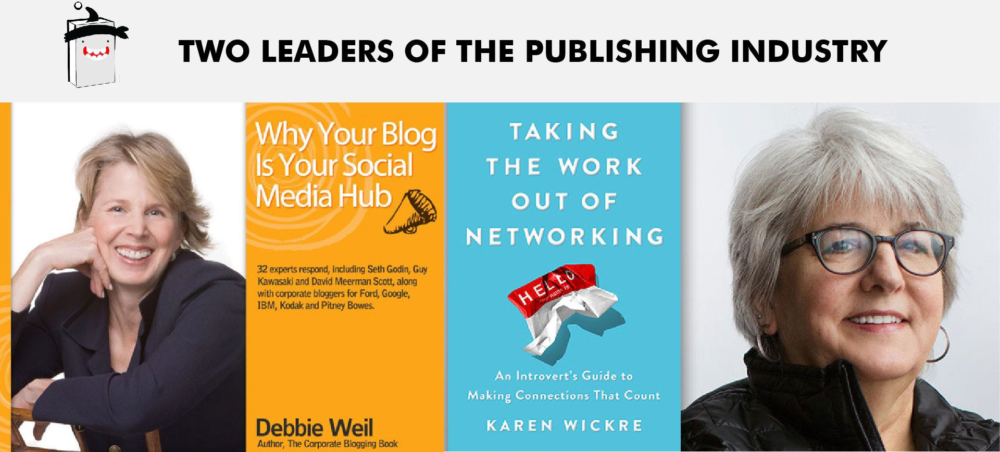

Two leaders of the publishing industry

Karen Wickre and Debbie Weil two names of the publishing industry

@BookDojo we cared about the history of online publishing because we listened and talked to the early actors of the industry of print and online publishing and gathered useful insights from their creative and engaging works that put things forward by making them better. They are men and women like Karen Wickre and Debbie Weil
Karen made a huge leap and taught me that Book versioning mattered and still matter now and nobody is tackling this issue of updating book according to new inputs. As a mail-only startup publishing data-driven books we could not pass away this insight because the data on which the data-driven books that we publish are based are countable and variable over time. Then we owe our readers to update them so they always get the most updated version at each moment. This lesson from Karen also taught us that like blockchain, bookchain and blogchain also matter then linked list and visualization also like what I have written in my article about the visualization of the network effect submitted to the Data Visualization Society publication. Will include the link to this article here once it is published, if not you can ask me. I also will be expanding this with visuals.
From Debbie, I learned how corporate blogging was important and how it is now so underrated by corporate companies that run pushing content into social network platforms which are promoting platforms for tunneling people toward deeper interactive conversation and educative content that really serve them. Debbie some extend allowed us to see how our data-driven books could be consumed with email by those who Jonah Paretti name the board of work, a group of people that we think deserve a better name because of their important position in the hierarchy.
These are some key ideas that Book Dojo is offering and this article is more about being kind and thankful to these Two leading women than it is for Book Dojo the mail-only startup that I am personally running through its way to success using the skills and lessons gathered from people like Karen and Debbie.
More about Book Dojo here
Soon the first data-driven book here